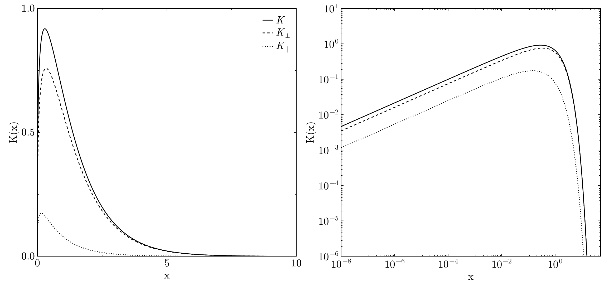

SynchrotronKernel.jl
This package computes the synchrotron kernel for a frequency ratio $x = ν/ν_0$ and its polarisation components.

Simple interface
If you simply need to calculate the synchrotron kernel and the polarisation components you can use the following functions
Synchrotron Kernel
SynchrotronKernel.synchrotron_kernel — Functionsynchrotron_kernel(x::Real)Computes the first synchrotron function and the polarisation components at a given frequency ratio $x = ν/ν_0$. Returns a tuple (K_tot, K_ort, K_par).
K_tot = F(x)
K_ort = 0.5 * (F(x) + G(x))
K_par = 0.5 * (F(x) - G(x))Synchrotron Functions
$F(x) = x \int_x^‚àû K_{\frac{5}{3}}(t) dt$
$G(x) = x K_{\frac{2}{3}}(x)$
Intensity
SynchrotronKernel.synchrotron_intensity — Functionsynchrotron_intensity(x::Real)Computes the total synchrotron kernel, without polarisation components. Wrapper for F.
$F(x) = x \int_x^‚àû K_{\frac{5}{3}}(t) dt$
Polarisation
SynchrotronKernel.synchrotron_polarisation — Functionsynchrotron_polarisation(x::Real)Computes the second synchrotron function at a given frequency ratio $x = ν/ν_0$. Returns a tuple of (K_ort, K_par).
K_ort = 0.5 * (F(x) + G(x))
K_par = 0.5 * (F(x) - G(x))Synchrotron Functions
$F(x) = x \int_x^‚àû K_{\frac{5}{3}}(t) dt$
$G(x) = x K_{\frac{2}{3}}(x)$
Synchrotron Functions
If you need to access the individual synchrotron functions you can use the direct interface.
First Function
SynchrotronKernel.ℱ — Functionℱ(x::Real)Computes the first synchrotron function at a given frequency ratio $x = ν/ν_0$.
$F(x) = x \int_x^‚àû K_{\frac{5}{3}}(t) dt$
Wrapper for F.
SynchrotronKernel.F — FunctionF(x::Real)Computes the first synchrotron function at a given frequency ratio $x = ν/ν_0$.
$F(x) = x \int_x^‚àû K_{\frac{5}{3}}(t) dt$
Second Function
SynchrotronKernel.ùí¢ ‚Äî Functionùí¢(x::Real)Computes the second synchrotron function at a given frequency ratio $x = ŒΩ/ŒΩ_0$.
$G(x) = x K_{\frac{2}{3}}(x)$
Wrapper for G.
SynchrotronKernel.G — FunctionG(x::Real)Computes the second synchrotron function at a given frequency ratio $x = ν/ν_0$.
$G(x) = x K_{\frac{2}{3}}(x)$